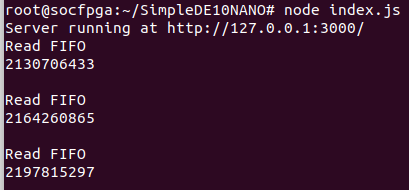

Nodejs Talking To C Executable 2¶
| Date: | 21 Sep 2019 |
|---|
What are we gonna do?¶
- In last part, we tested the feasibility with very simple codes
- The next step is to write up a module, because this is my coding style! I like things to be structured and organized!
C Part¶
#include <string.h>
#include <inttypes.h>
#include <stdlib.h>
#include <stdio.h>
#include <unistd.h> // provides access to the POSIX operating system API
#include <fcntl.h> // header in the C POSIX library
#include <sys/mman.h> // memory management
#include "hwlib.h" // location: SoC EDS\embedded\ip\altera\hps\altera_hps\hwlib\include
#include "socal/socal.h" // location: SoC EDS\embedded\ip\altera\hps\altera_hps\hwlib\include\soc_cv_av\socal
#include "socal/hps.h"
#include "socal/alt_gpio.h"
#define HW_REGS_BASE ( ALT_STM_OFST )
#define HW_REGS_SPAN ( 0x04000000 )
#define HW_REGS_MASK ( HW_REGS_SPAN - 1 )
//====================================
void *virtual_base;
// FIFO memory address
void *h2p_lw_FIFOreadRequest_addr;
void *h2p_lw_FIFOreadDataQueue_addr;
void *h2p_lw_FIFOreadEmpty_addr;
// PIO memory address
void *h2p_lw_PIO_addr;
int fd;
//====================================
// Memory Handlers
//====================================
int memoryMapping(unsigned long PIObase){
// Map the **Address Space** for LED PIOs
// into **User Space** so we can use them
// We'll actually map in the entire CSR ??? span of
// the HPS since we want to access various PIOs
// within that span.
fd = open("/dev/mem", ( O_RDWR | O_SYNC ) );
if( fd == -1 ){
printf("Error: can't open \"/dev/mem\" \n");
return(1);
}
virtual_base = mmap(NULL, HW_REGS_SPAN, (PROT_READ|PROT_WRITE),
MAP_SHARED, fd, HW_REGS_BASE);
if(virtual_base == MAP_FAILED){
printf("Error: mmap() failed \n");
close(fd);
return(1);
}
// FIFO mapping
h2p_lw_FIFOreadRequest_addr = virtual_base + (
(unsigned long)(ALT_LWFPGASLVS_OFST + 0x40000) &
(unsigned long)(HW_REGS_MASK)
);
h2p_lw_FIFOreadDataQueue_addr = virtual_base + (
(unsigned long)(ALT_LWFPGASLVS_OFST + 0x40010) &
(unsigned long)(HW_REGS_MASK)
);
h2p_lw_FIFOreadEmpty_addr = virtual_base + (
(unsigned long)(ALT_LWFPGASLVS_OFST + 0x40020) &
(unsigned long)(HW_REGS_MASK)
);
// PIO mapping
if(PIObase>0x40020){
h2p_lw_PIO_addr = virtual_base + (
(unsigned long)(ALT_LWFPGASLVS_OFST + PIObase) &
(unsigned long)(HW_REGS_MASK)
);
}
return(0);
}
int cleanMemoryAndExit(){
if( munmap(virtual_base,HW_REGS_SPAN)!=0 ){
printf("Error: munmap() failed \n");
close(fd);
return(1);
}
close(fd);
return(0);
}
//====================================
// FIFO Handlers
//====================================
int FIFOread(){
if(*(uint32_t *)h2p_lw_FIFOreadEmpty_addr != 1){
*(uint32_t *)h2p_lw_FIFOreadRequest_addr = 1;
usleep(1);
*(uint32_t *)h2p_lw_FIFOreadRequest_addr = 0;
return(0); // successful
}
return(1); // failed due to empty
}
int FIFOreadNwords(int N){
int n;
for (n=0;n<N;n++){
if(FIFOread()==0){
printf("%" PRIu32 "\n",*(uint32_t *)h2p_lw_FIFOreadDataQueue_addr);
}
else{
printf( "Empty!\n");
}
}
return(0);
}
//====================================
// PIO Handlers
//====================================
int setPIO(uint32_t setPIOvalue){
*(uint32_t *)h2p_lw_PIO_addr = setPIOvalue;
return(0);
}
//====================================
// main
//====================================
int main(int argumentCount, char ** arg) {
int NwordsToRead = (int) strtoul (arg[1], NULL, 0);
unsigned long PIObase = strtoul (arg[2], NULL, 0);
uint32_t setPIOvalue = (uint32_t) strtoul (arg[3], NULL, 0);
memoryMapping(PIObase);
FIFOreadNwords(NwordsToRead);
if(PIObase>0x40020) setPIO(setPIOvalue);
cleanMemoryAndExit();
return(0);
}
Install Nodejs dependencies¶
- First I create a directory called
SimpleDE10NANO - In
SimpleDE10NANO, execute
npm init # go through the guide and make sure: entry point: (index.js)
npm install express --save
npm install socket.io --save
Make the module¶
- make a file
SimpleDE10NANO/my_modules/SimpleDE10NANO.js, and put the following in it:
const {execFile} = require('child_process');
module.exports = class SimpleDE10NANO{
constructor(hostIP, port, Cexecutable, FIFOdepth){
var self = this;
self.Cexecutable = Cexecutable;
self.FIFOdepth = FIFOdepth;
self.app = require('express')();
self.httpServer = require('http').createServer(self.app);
self.io = require('socket.io')(self.httpServer);
self.app.get('/',(request,response)=>{
response.sendFile(__dirname+'/index.html');
});
self.io.on('connection',(socket)=>{
console.log('a user connected');
socket.on('message',(message)=>{
console.log('message:',message);
if(message=="send me data"){
self.sendDataToClient();
}
});
});
self.httpServer.listen(port, hostIP, ()=>{
console.log(`Server running at http://${hostIP}:${port}/`);
});
}
sendDataToClient(){
var self = this;
}
readFIFO(NwordsToRead){
var self = this;
//int NwordsToRead = (int) strtoul (arg[1], NULL, 0);
//unsigned long PIObase = strtoul (arg[2], NULL, 0);
//uint32_t setPIOvalue = (uint32_t) strtoul (arg[3], NULL, 0);
var args = [NwordsToRead,0,0];
const child = execFile(self.Cexecutable,args,(error,stdout)=>{
if(error) throw error;
console.log(stdout);
});
}
testReadFIFO(NwordsToRead){
var self = this;
setInterval(()=>{
self.readFIFO(NwordsToRead);
}, 1000);
}
setPIO(){
var self = this;
}
}
The main program: index.js¶
- make a file
SimpleDE10NANO/index.js, and put the following in it:
const SimpleDE10NANO = require("./my_modules/SimpleDE10NANO.js");
const simpleDE10NANO = new SimpleDE10NANO(
hostIP = '127.0.0.1',
port = 3000,
Cexecutable = "./HPS_FPGA_LED",
FIFOdepth = 256
);
simpleDE10NANO.testReadFIFO(1);
- then command:
node index.js - result:
